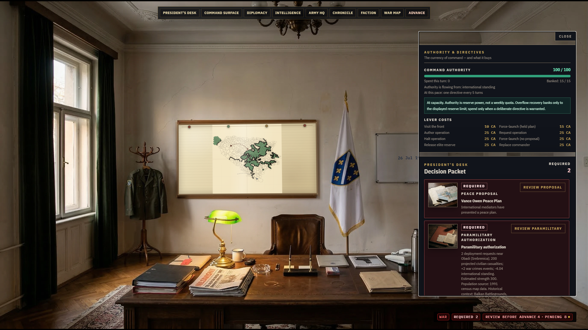
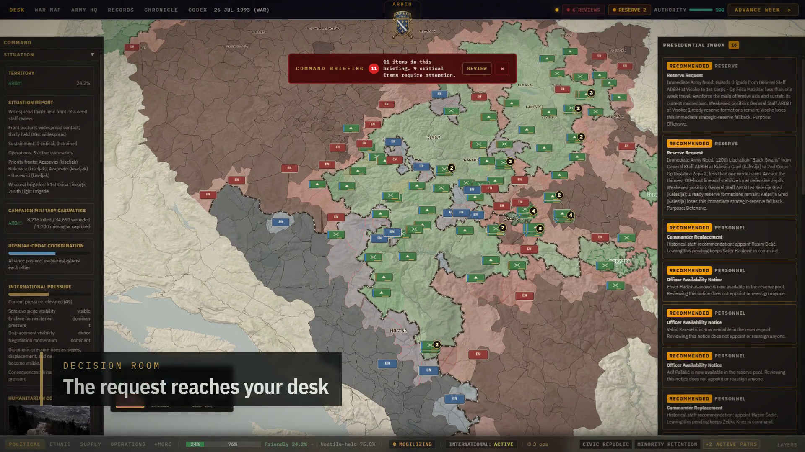
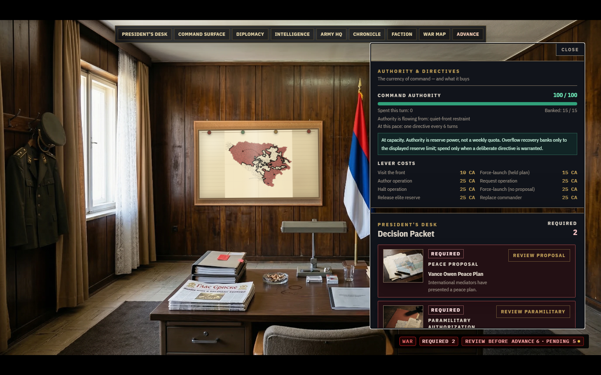
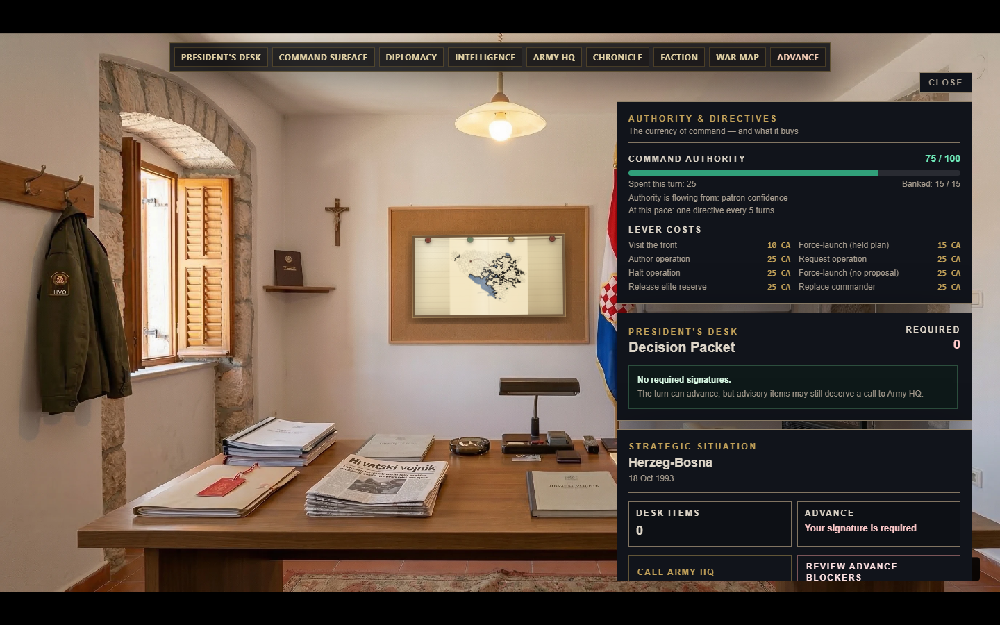
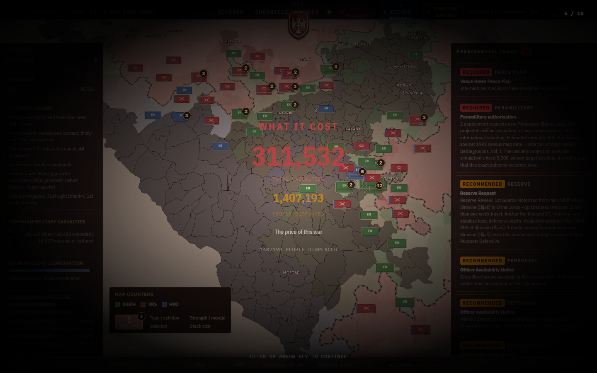

Republic of Bosnia and Herzegovina
Governs from a requisitioned apartment in besieged Sarajevo. It holds the most formal authority of the three governments and has the least to hide behind when the front breaks.
A political and military simulation of the Bosnian War, 1992 to 1995. Play one of the three presidencies through 188 weekly turns.
Watch the trailer 1:25 Press and publishers
Footage from the current build, version 0.9.9 beta. In development for PC.

PlayYou are the president. The army is not yours to move. Your part is the signature: what to authorise, whom to appoint, which request to refuse, which peace plan to answer.
Each signature costs command authority. The budget recovers slowly and runs dry in a crisis, so the reserve brigade you release this week may be the commander you cannot replace next week.
Nothing you sign is forgotten. The Chronicle keeps the orders, the Records keep what came of them, and the verdict at the end reads both.
The same five powers are on every desk. What each one costs is different in each capital.

Governs from a requisitioned apartment in besieged Sarajevo. It holds the most formal authority of the three governments and has the least to hide behind when the front breaks.

Inherits the JNA's officers and equipment and a command post at Pale. The strongest army on paper, answering to an assembly that can refuse to sign.

Answers to two capitals from a stone house in Herzegovina. Allied with Sarajevo, financed from Zagreb, and bound by what Zagreb wants in return.

A campaign ends at the Dayton table, or earlier if the war does. The verdict grades what it cost: the people killed and displaced, the territory held against the historical map, and how far your war strayed from the one that happened. Atrocity cannot improve the grade.
The same scoring runs every week during play. Left on its historical course, the simulation ends with more than nineteen in twenty settlements under their historical controller, and all 31 anchor towns where history put them.
The Codex, more than a hundred sourced essays, opens as your campaign reaches the events they describe, so you can read what actually happened next to what you did.
The build is playable end to end for all three sides, and every clip and screenshot on this page comes from it. The clips are cut for pace and captioned; nothing is mocked up.
For build access, the roadmap, or a longer conversation, write through the developer profile.